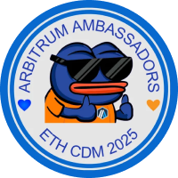

Get your
Arbitrum POAP

Requirements
Refresh
Complete both steps to unlock your POAP:
Follow @arbitrum
on Farcaster
Follow
Recast the original cast
with this POAP
Recast
Claim POAP
Once both steps are done, your POAP will be ready to claim it.